概述
1 交易型系统设计的一些原则
墨菲定律
康威定律

1.1 高并发原则
1.1.1 无状态
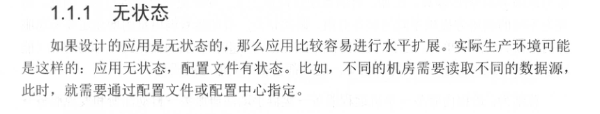
1.1.2 拆分
1.1.3 服务化
1.1.4 消息队列
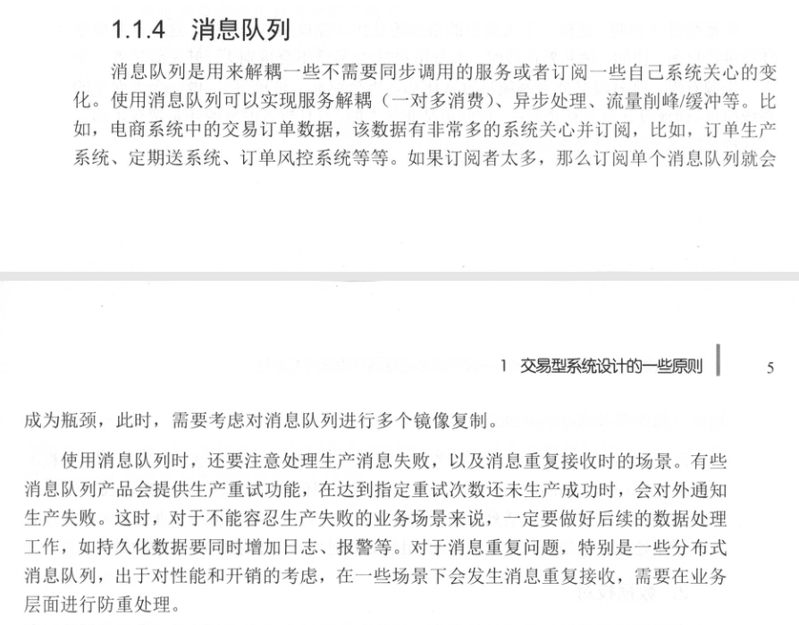
1.1.5 数据异构
数据异构

数据闭环
1.1.6 缓存银弹
浏览器缓存
APP客户端缓存
CDN缓存
接入缓存层
应用层缓存
分布式缓存
1.1.7 并发化
1.2 高可用原则
1.2.1 降级
1.2.2 限流
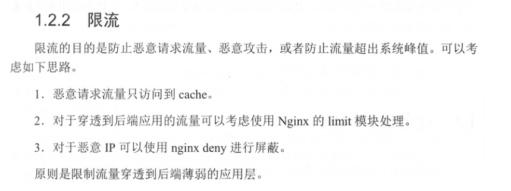
1.2.3 切流量
1.2.4 可回滚

1.3 业务设计原则
1.3.1 防重设计
1.3.2 幂等设计
1.3.3 流程可定义
1.3.4 状态与状态机
1.3.5 后台系统操作可反馈
1.3.6 后台系统审批化
1.3.7 文档和注释
1.3.8 备份
1.4 总结

高可用
2 负载均衡与方向代理
高并发框架
2.1 upstream配置
2.2 负载均衡算法
2.3 失败重试
2.4 健康检查
2.4.1 TCP心跳检查
2.4.2 HTTP心跳检查

2.5 其他配置
2.5.1 域名上游服务器
2.5.2 备份上有服务器
2.5.3 不可用上有服务器
2.6 长连接
2.7 HTTP反向代理示例
1. 全局配置 proxy cache

2. location配置
2.8 HTTP 动态负载均衡
2.8.1 Consul+Consul-template
1 Consul-Server
2 Consul-template
2.8.2 Consul+OpenResty
2.9 Nginx四层负载均衡
2.9.1 静态负载均衡
1 stream指令
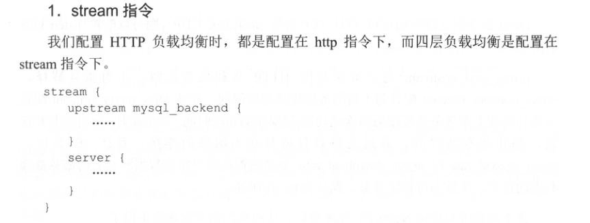
2 upstream配置
3 server配置
2.9.2 动态负载均衡
1 upstream配置

2 从Consul添加上游服务器
3 从Consul删除上游服务器
4 upstream_show
3 隔离术
3.1 线程隔离
3.2 进程隔离
3.3 集群隔离
3.4 机房隔离
3.5 读写隔离
3.6 动静隔离
3.7 爬虫隔离
3.8 热点隔离
3.9 资源隔离
3.10 使用Hystrix实现隔离
3.10.1 Hystrix简介
3.10.2 隔离示例
3.11 基于Servlet3 实现请求隔离
3.11.1 请求解析和业务 处理线程池分离
3.11.2 业务线程池隔离
3.11.3 业务线程池监控/运维/降级
3.11.4 如何使用Servlet3异步化
3.11.5 一些Servlet3异步化压测数据
4 限流详解
4.1 限流算法
4.2 应用级限流
4.2.1 限流总并发/连接/请求数
4.2.2 限流总资源数
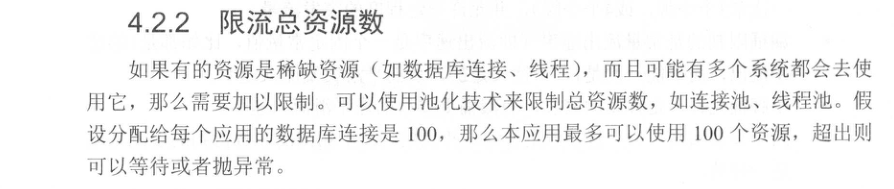
4.2.3 限流某个接口的总并发/请求数
4.2.4 限流某个接口的时间窗请求数
4.2.5 平滑限流某个接口的请求数
4.3 分布式限流
4.4 接入层限流
4.5 节流
5 降级特技
5.1 降级预案
5.2 自动开关降级
5.2.1 超时降级
5.2.2 统计失败次数降级
5.2.3 故障降级
5.2.4 限流降级
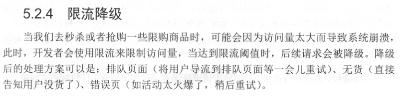
5.3 人工开关降级
5.4 读服务降级
5.5 写服务降级
5.6 多级降级
5.7 配置中心

5.7.1 应用层API封装
5.7.2 使用配置文件实现开关配置
5.7.3 使用配置中心实现开关配置
5.8 使用Hystrix实现降级
5.9 使用Hystrix实现熔断
6 超时与重试机制
6.1 简介
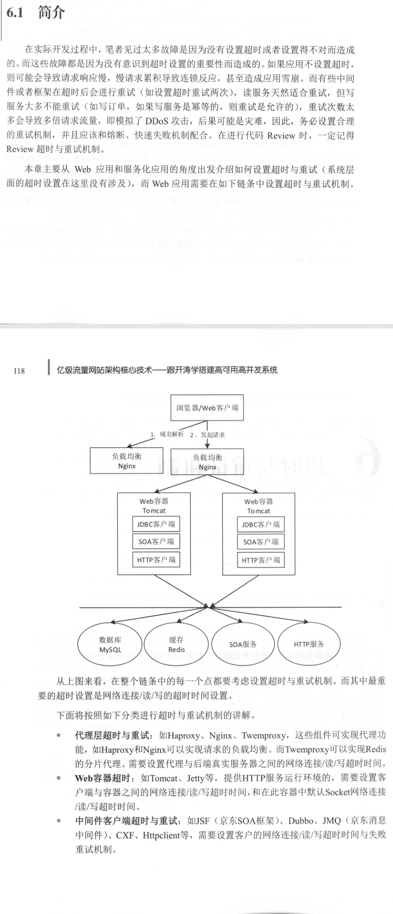
6.2 代理层超时与重试
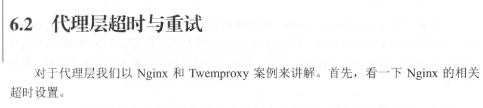
6.2.1 Nginx
1 客户端超时设置
2 DNS解析超时设置

3 代理超时设置
6.2.2 Twemproxy
6.3 Web容器超时
6.4 中间件客户端超时与重试
6.5 数据库客户端超时
6.6 NoAQSQL客户端超时
6.7 业务超时
6.8 前端Ajax超时
6.9 总结
7 回滚机制
7.1 事务回滚
7.2 代码库回滚
7.3 部署版本回滚
1 部署版本化
2 小版本增量发布
3 大版本灰度发布
4 架构升级并发发布
7.4 数据版本回滚
8 压测与预案

8.1 系统压测
8.2 系统优化和容灾
8.3 应急预案
高并发
9 应用及缓存
9.1 缓存简介
9.2 缓存命中率
9.3 缓存回收策略

9.4 Java缓存类型
9.6 缓存使用模式实践
10 HTTP缓存
10.2 HTTP缓存
10.2.1 Last-Modified

1 首次访问
2 F5刷新
3 Ctrl+F5强制刷新
4 from cache
5 Age
6 Vary
7 Via
10.6 一些经验
11 多级缓存
11.2 如何缓存数据
11.2.1 过期与不过期
11.2. 2 维度化缓存与增量缓存
11.2.3 大Value缓存
11.2.4 热点缓存
11.3 分布式缓存与应用负载均衡
11.3.1 缓存分布式

11.3.2 应用负载均衡
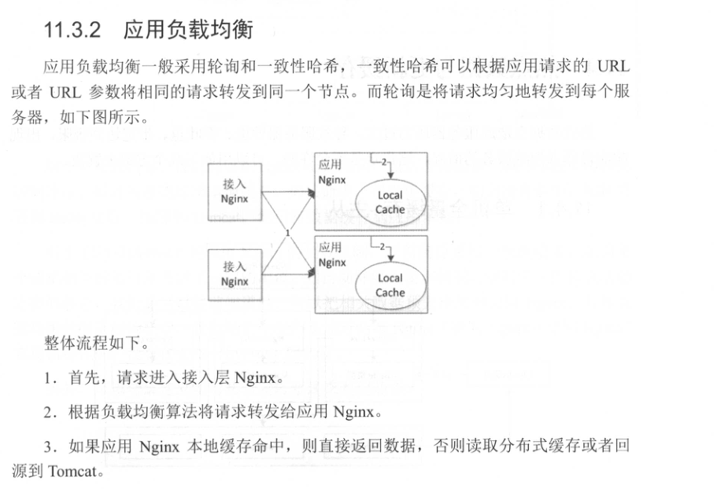
11.4 热点数据与更新缓存
11.4.1 单机全量缓存+主从
11.4.2 分布式缓存+应用本地热点

11.5 更新缓存与原子性
11.6 缓存崩溃与快速修复
12 连接池线程池详解
14 如何扩容
14.1 单体应用垂直扩容
14.2 单体应用水平扩容
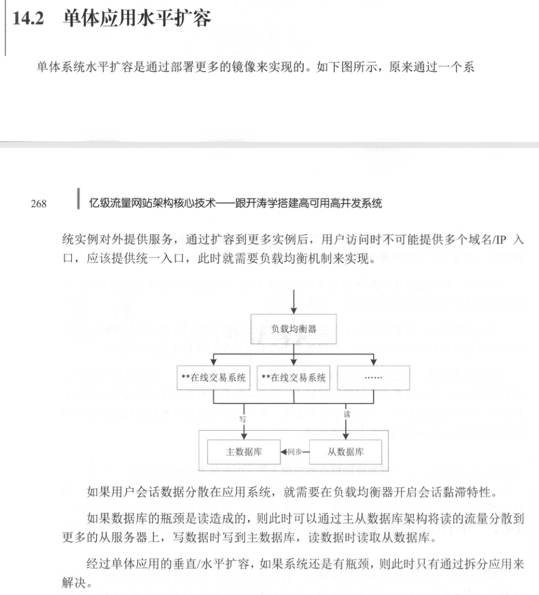
14.3 应用拆分
14.4 数据库拆分
14.5 数据库分库分表
14.5.1 应用层还是中间件层
14.5.2 分库分表策略
14.5.3 使用sharding-jdbc分库分表

14.6 数据异构

14.6.1 查询维度异构
14.6.2 聚合据异构
14.7 任务系统扩容
15 队列术
15.1 应用场景
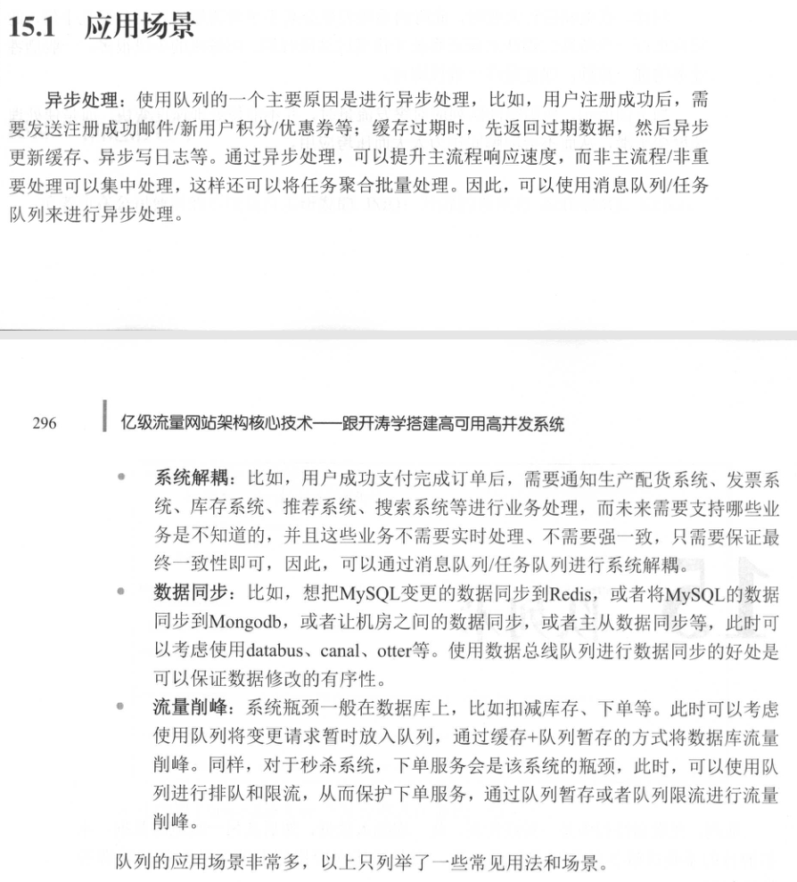
15.2 缓冲队列
15.3 任务队列
15.4 消息队列
15.5 请求队列
15.6 数据总线队列
15.7 消息队列
15.8 其他队列
15.9 Disruptor+Redis队列
案例